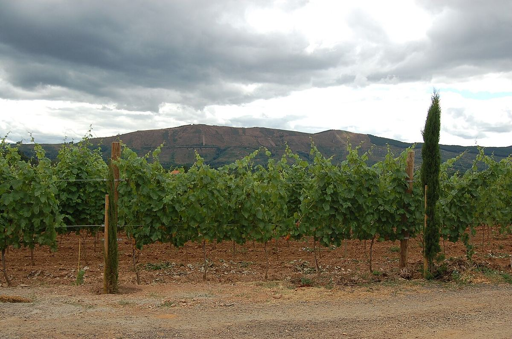

ROUGE
Monterrei est la dénomination d'origine la plus méridionale et la plus continentale de Galice, située dans la vallée du Tâmega, autour de Verín, près de la frontière portugaise. Elle produit surtout des blancs de godello et de treixadura et des rouges de mencía.

La région de Monterrei possède une longue tradition viticole, liée au château et à la forteresse de Monterrei, qui domine la vallée depuis une colline proche de Verín, ainsi qu'aux ordres religieux qui possédaient des terres dans la zone. Sa situation sur une route historique entre la Galice, la Castille et le Portugal favorisa le commerce de ses vins. Comme ailleurs en Galice, le vignoble subit les effets du phylloxéra et de l'émigration au XXe siècle, et la dénomination d'origine fut créée au cours des dernières décennies du siècle, ce qui stimula la modernisation des caves et la remise en valeur des cépages autochtones.
L'appellation s'étend sur la vallée du Tâmega et ses versants, dans le sud-est de la province d'Ourense, dans des communes comme Verín, Monterrei, Oímbra et Castrelo do Val. On distingue deux sous-zones : Val de Monterrei, en fond de vallée, aux sols plus profonds, et Ladeira de Monterrei, sur les coteaux qui l'entourent.
Monterrei a le climat le plus continental des appellations galiciennes. Les montagnes qui l'entourent l'isolent en grande partie de l'influence atlantique : les étés sont chauds et secs, les hivers froids et les précipitations inférieures à celles du reste de la Galice. Les gelées de printemps constituent un risque et l'écart de température entre le jour et la nuit est prononcé, ce qui favorise la conservation de l'acidité et des arômes.
En fond de vallée dominent des sols sédimentaires, argileux et plus fertiles, tandis que les coteaux présentent des sols plus pauvres de schiste et de granite, mieux drainés.
Parmi les blancs se distinguent le godello et la treixadura, aux côtés de la doña blanca, de l'albariño, de la loureira et d'autres cépages autorisés. Le mencía est le principal rouge, accompagné du merenzao, de l'arauxa, nom local du tempranillo, du sousón et du caíño. Les blancs, surtout ceux de godello, sont la production la plus répandue et allient maturité du fruit et fraîcheur. Les rouges de mencía sont généralement fruités et de corps moyen. On élabore des vins jeunes et d'autres élevés sur lies ou en barrique.
La vallée du Tâmega, ouverte vers le Portugal, offre un paysage de vignes en coteau alternant avec des cultures et des bois, dominé par la silhouette de la forteresse de Monterrei. La région de Verín est également connue pour ses sources d'eaux minérales. La proximité de Chaves, déjà en territoire portugais, rappelle les liens historiques étroits entre les deux côtés de la frontière, qui partagent la même vallée et une culture agricole très semblable.